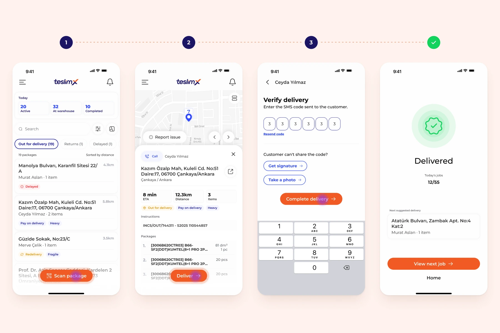
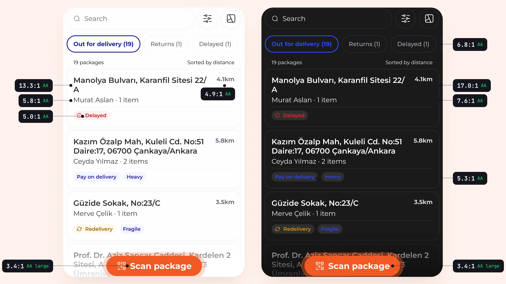
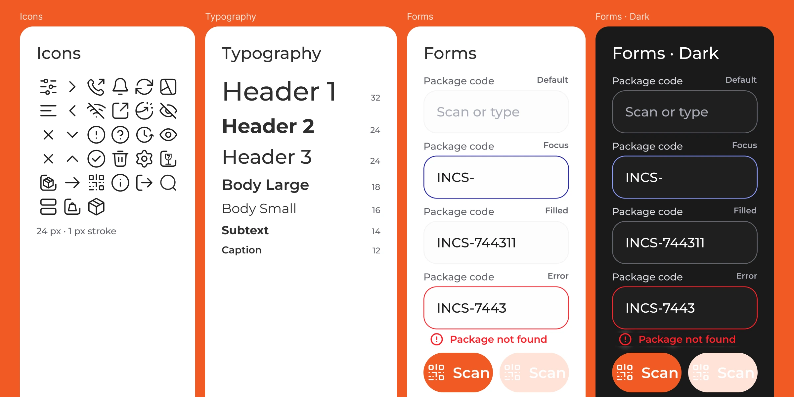

One thumb. Bad signal. Direct sunlight.
Couriers were running daily routes of 20–100 packages out of fragmented Excel sheets and a dashboard never meant for phones. I designed the app that replaced all of it — from a raw PRD to a dev-ready library in one month.
Role
Product Designer — Das Mione, my design studio
Timeline
2025 · 1 month, brief to handoff
Focus
Mobile ergonomics · High-contrast UI · Offline-first · Design systems
Tools
Figma · Figma Motion · Prototyping
The brief wasn't an app, it was ergonomics
A courier holds a phone in one hand and a parcel in the other, in a moving vehicle, in glare, sometimes with no signal at all. Every requirement in the PRD had to survive that, and the ones that couldn't were the wrong requirements.
One month, brief to handoff. Three decisions came out of the physical reality rather than a pattern library, and each one is falsifiable — you can check them against the screens.

Three taps, enforced as a business rule
The fork: treat tap count as a design aspiration, or make it a rule the PRD has to obey.
What I chose: a rule. A courier completes any delivery flow in a maximum of three taps, enforced from the wireframes on. It held because we worked for it rather than hoped for it — every flow was drawn out in detail and tested against the rule, and anything that wouldn't fit got rethought at the flow stage rather than argued about at the UI stage. The camera scan between tap one and tap two is automatic, which is part of why the count works.

Designing for glare and for 2am
The fork: ship light mode and add dark later, which is what the timeline wanted.
What I chose: both, in parallel. Primary CTAs sit in the bottom third for one-handed thumb reach, and the light and dark treatments are precise alterations of the same hierarchy rather than an inverted palette — because a courier switches between them inside a single shift.
Then I measured it rather than claiming it. Several pairs that looked fine failed on test: secondary distance text, the delayed and redelivery tags, and the blues used on the dark background. Those were corrected to pass AA; the orange primary button passes as large text, which is the honest version of the claim.
What it cost: every component had to be specified twice inside a one-month window, which is where most of the month went.
Offline-first, not offline-tolerant
The fork: block the flow when the connection drops, or let the courier finish and reconcile afterwards.
What I chose: finish first. The app had to keep working in a basement, a lift, or a dead zone on the ring road, so the data syncs around the courier rather than the courier waiting for the data.
What it cost: a long run of conversations with the PM and the developers about what could actually be cut. Which screens still work with no connection and which genuinely can't, what can be held on the device, how delivery codes and QR confirmation behave when nothing can be checked against a server. The design problem underneath all of it was confidence: a courier should never have to wonder whether the delivery they just completed counted. So every queued action says so plainly, and nothing waits on a spinner that may never resolve.

Why the deadline held
A mobile component library from the ground up — custom iconography, scalable typography, standardised form components in both modes — handed over meeting the accessibility standard before a single ticket was written.
One month only worked because of where the time went. It was a dense run of meetings and fast turnarounds, but nothing moved to UI until the wireframes were agreed and the flows had been worked through in detail. Every edge case we could name was named while it was still cheap to change. Changing a detail after the UI is drawn and the components are built costs days; changing it on a wireframe costs an hour. That sequencing is the whole reason the month was enough.
Replaced spreadsheets with something that survives the road.
Couriers who had been reconciling 20–100 packages a day across spreadsheets now work from a single list that survives a dead zone and syncs when signal returns. Manual entry is gone.